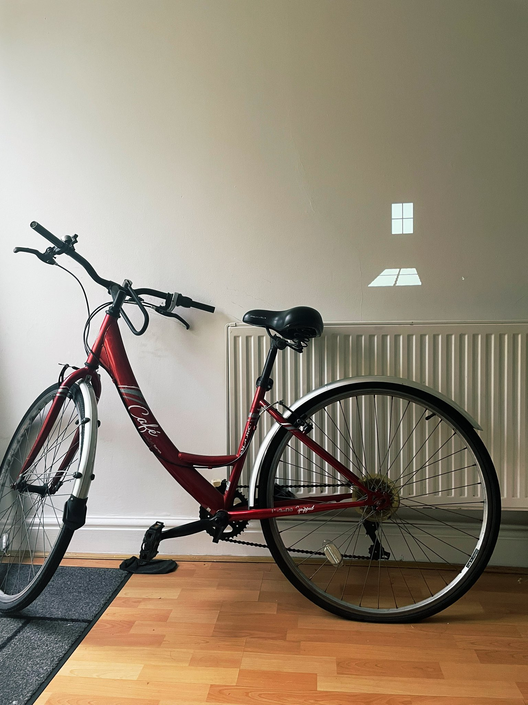
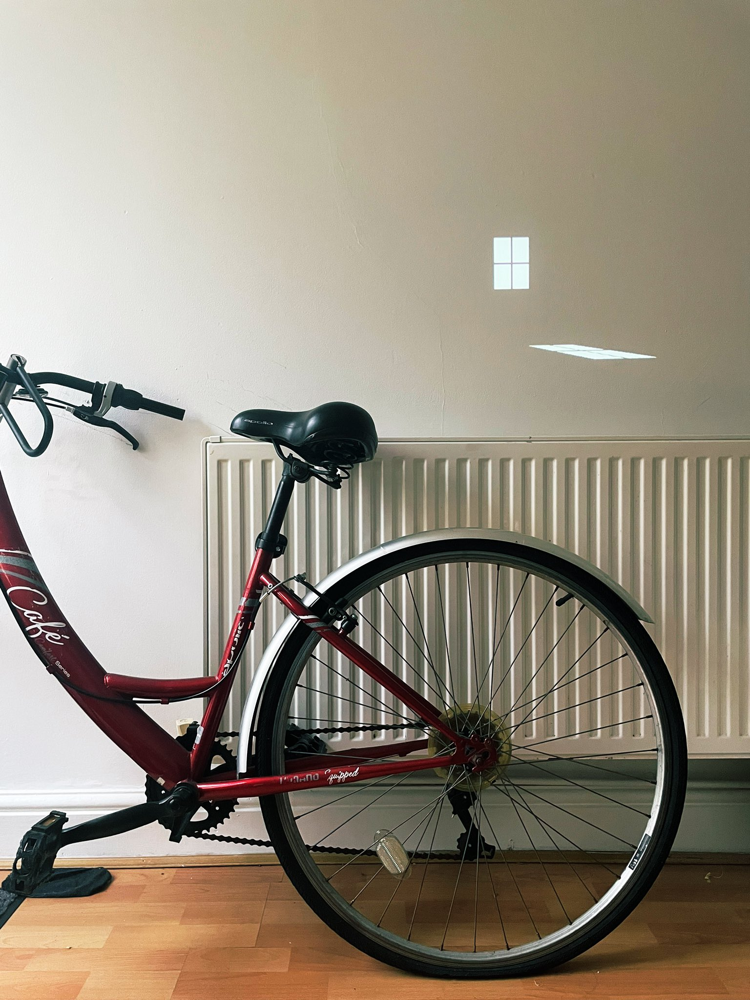
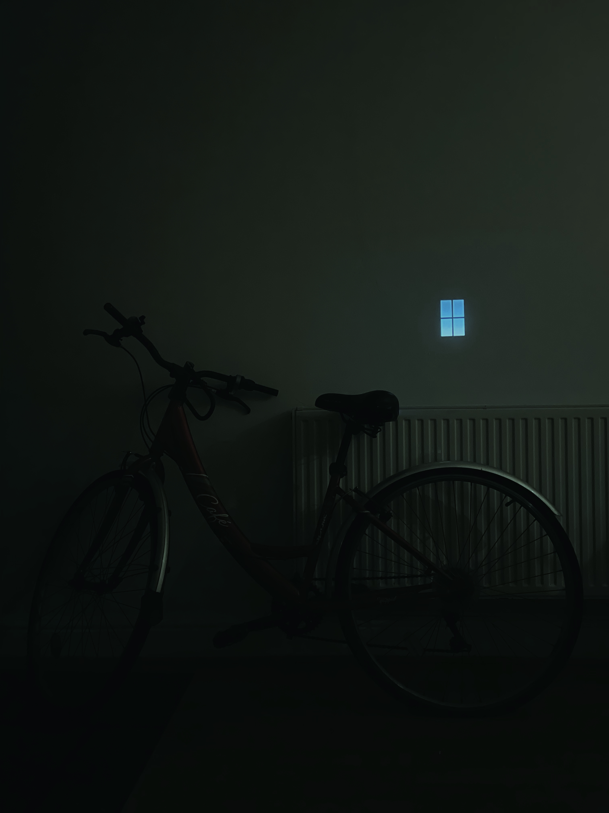

<html>

  <link rel="stylesheet" href="../popout stylesheet.css">
  <title> Window-Like Clock </title>
</html>

<body class="page">
  <div class="overall">
    <div class="header">
    <p>Window-Like Clock</p>
    </div>

    <div class="content">

      <p>A simple "Clock" that represents the passing of time with an imaginary window. Over the course of the day, the angle of the sunlight projected through the window sweeps across the wall. As the sun sets, the sky seen through the window becomes a gradient of orange and pale pink. As night-time fades in, the Moon crosses the slice of sky seen through the window, turning it into a nightlight.</p>
      <p>When thinking about time, our primary relationship with it is the day and night cycle - a clock or watch just slices it into hour-long sections and tracks the progress. I decided to create this clock based on the idea of representing sunlight directly. Maybe we can become slightly more aware of the physical connection between Time and Light.</p>

    <br>
    <br>
    </img>
    <p></p>
    </img>
    <p></p>
    </img>

    </div>


  </div>
  <div class="footer">
    <p>: : Copyright © CALEB WOODWARD 2023 - All rights reserved. : :</p>
    <!--<p>[<a href="../index.html">Home</a>]</p>-->
  </div>


</body>
